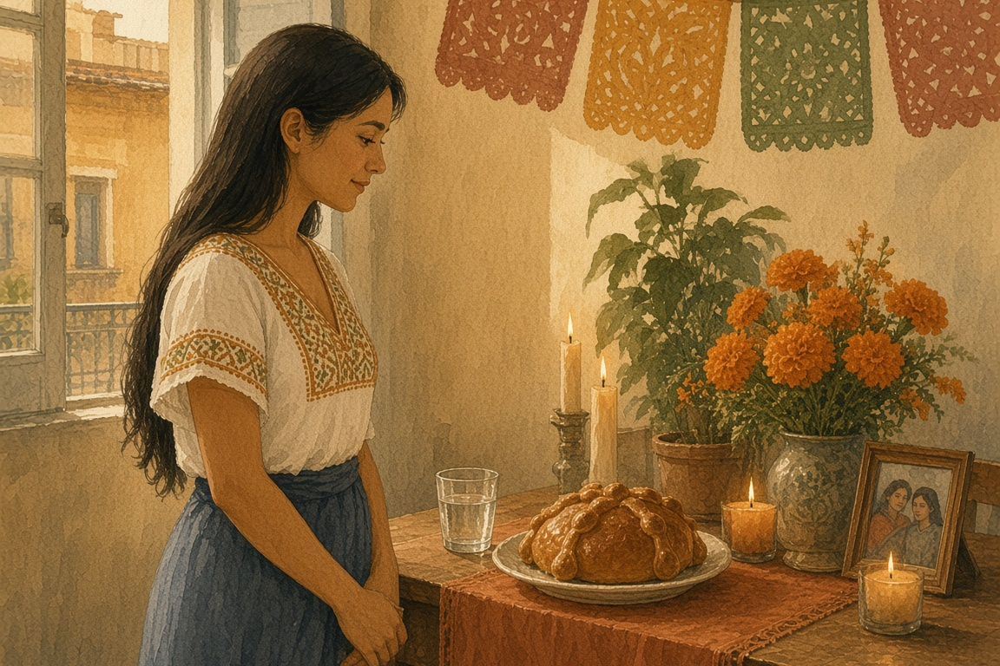
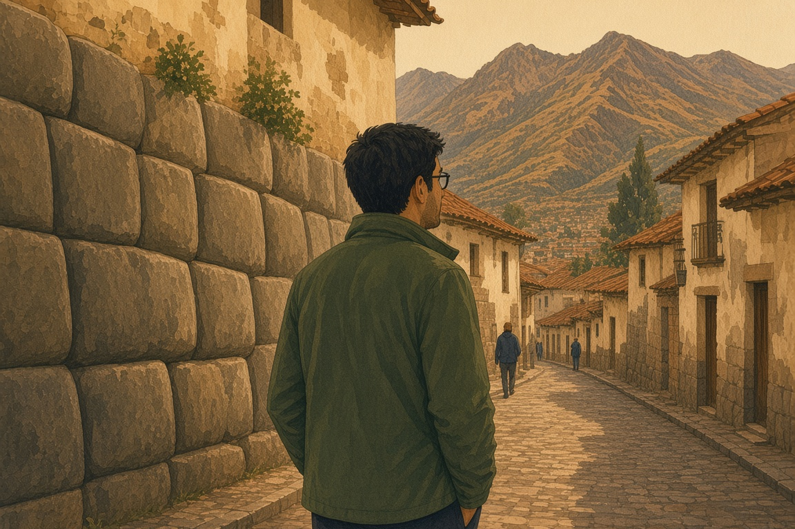
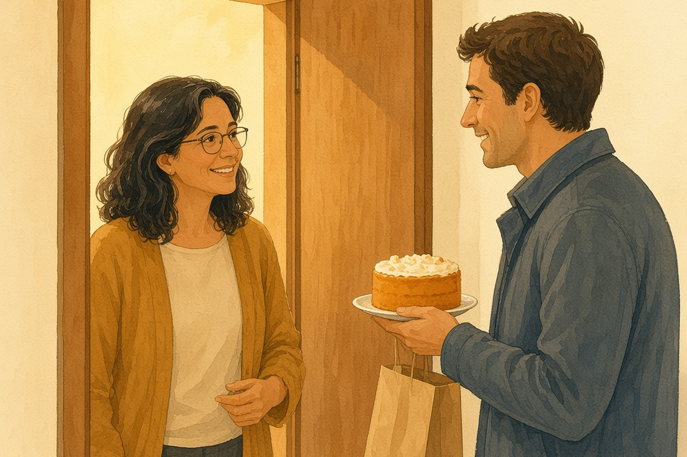
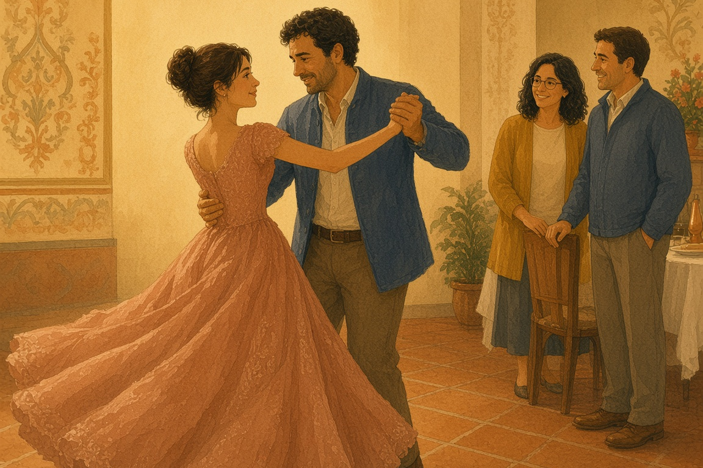
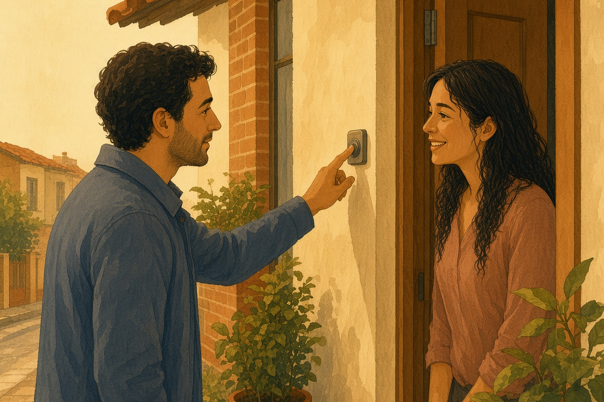

Lecturas culturales
Historias cortas sobre costumbres del mundo hispano. Elige tu nivel y una lectura.
A1 Acceso
-
 Dos apellidos, una persona Los dos apellidos
Dos apellidos, una persona Los dos apellidos -
 Quito, una capital en las nubes Una capital
Quito, una capital en las nubes Una capitalIncluded for Edison Spanish students · Book a trial class
Already a student? Enter password -
 ¿Tú o usted? Tú y usted
¿Tú o usted? Tú y usted -
 Un beso en la mejilla El saludo
Un beso en la mejilla El saludoIncluded for Edison Spanish students · Book a trial class
Already a student? Enter password -
 La Mitad del Mundo La línea ecuatorial
La Mitad del Mundo La línea ecuatorialIncluded for Edison Spanish students · Book a trial class
Already a student? Enter password -
 En Ecuador pagamos en dólares La moneda
En Ecuador pagamos en dólares La monedaIncluded for Edison Spanish students · Book a trial class
Already a student? Enter password -
 Domingo en el Zócalo Una plaza
Domingo en el Zócalo Una plazaIncluded for Edison Spanish students · Book a trial class
Already a student? Enter password -
 Islas lejos, en el Pacífico Las Galápagos
Islas lejos, en el Pacífico Las GalápagosIncluded for Edison Spanish students · Book a trial class
Already a student? Enter password


A2 Plataforma
-
 Después de comer, se habla Costumbres en la mesa
Después de comer, se habla Costumbres en la mesaIncluded for Edison Spanish students · Book a trial class
Already a student? Enter password -
 Un día de Fallas en Valencia Fiestas populares
Un día de Fallas en Valencia Fiestas popularesIncluded for Edison Spanish students · Book a trial class
Already a student? Enter password -

Flores y pan para los abuelos El Día de Muertos -
 Una vuelta por el Malecón Un lugar de la ciudad
Una vuelta por el Malecón Un lugar de la ciudadIncluded for Edison Spanish students · Book a trial class
Already a student? Enter password -
 Regalos en Nochebuena, o el 6 de enero La Navidad
Regalos en Nochebuena, o el 6 de enero La Navidad -

Un día en Cuzco Una ciudad andinaIncluded for Edison Spanish students · Book a trial class
Already a student? Enter password -
 El ceviche es patrimonio Un plato del Pacífico
El ceviche es patrimonio Un plato del PacíficoIncluded for Edison Spanish students · Book a trial class
Already a student? Enter password -
 Medellín se llena de flores Una fiesta de la ciudad
Medellín se llena de flores Una fiesta de la ciudadIncluded for Edison Spanish students · Book a trial class
Already a student? Enter password


B1 Umbral
-

¿Qué llevo a tu casa? Visitas e invitacionesIncluded for Edison Spanish students · Book a trial class
Already a student? Enter password -
 El sol vuelve a Otavalo La fiesta del Sol
El sol vuelve a Otavalo La fiesta del SolIncluded for Edison Spanish students · Book a trial class
Already a student? Enter password -
 El mate se comparte El mate
El mate se comparte El mateIncluded for Edison Spanish students · Book a trial class
Already a student? Enter password -

Los quince de Valeria Una fiesta de paso -

«Llego a las cinco» La puntualidadIncluded for Edison Spanish students · Book a trial class
Already a student? Enter password -
 Cinco cuadras de historia Un centro histórico
Cinco cuadras de historia Un centro históricoIncluded for Edison Spanish students · Book a trial class
Already a student? Enter password -
 La marimba se oye en la costa Una música del Pacífico
La marimba se oye en la costa Una música del PacíficoIncluded for Edison Spanish students · Book a trial class
Already a student? Enter password -
 En Paraguay también se habla guaraní Dos lenguas oficiales
En Paraguay también se habla guaraní Dos lenguas oficialesIncluded for Edison Spanish students · Book a trial class
Already a student? Enter password


B2 Avanzado
-
 La siesta, más leyenda que costumbre Un tópico
La siesta, más leyenda que costumbre Un tópicoIncluded for Edison Spanish students · Book a trial class
Already a student? Enter password -
El cóndor y el quetzal Animales y símbolos
Included for Edison Spanish students · Book a trial class
Already a student? Enter password -
 Hoy se mueve la casa La minga
Hoy se mueve la casa La mingaIncluded for Edison Spanish students · Book a trial class
Already a student? Enter password -
 Manuela no se queda en la nota a pie Una protagonista
Manuela no se queda en la nota a pie Una protagonistaIncluded for Edison Spanish students · Book a trial class
Already a student? Enter password -
 Una cola que no es solo fe Un santuario
Una cola que no es solo fe Un santuarioIncluded for Edison Spanish students · Book a trial class
Already a student? Enter password -
 Cuando «ahorita» no es ahora El tiempo en la conversación
Cuando «ahorita» no es ahora El tiempo en la conversación -
 El Yasuní no cabe en una postal Selva y decisiones
El Yasuní no cabe en una postal Selva y decisionesIncluded for Edison Spanish students · Book a trial class
Already a student? Enter password -
 El pueblo que parece inventado Un escritor y un pueblo
El pueblo que parece inventado Un escritor y un puebloIncluded for Edison Spanish students · Book a trial class
Already a student? Enter password